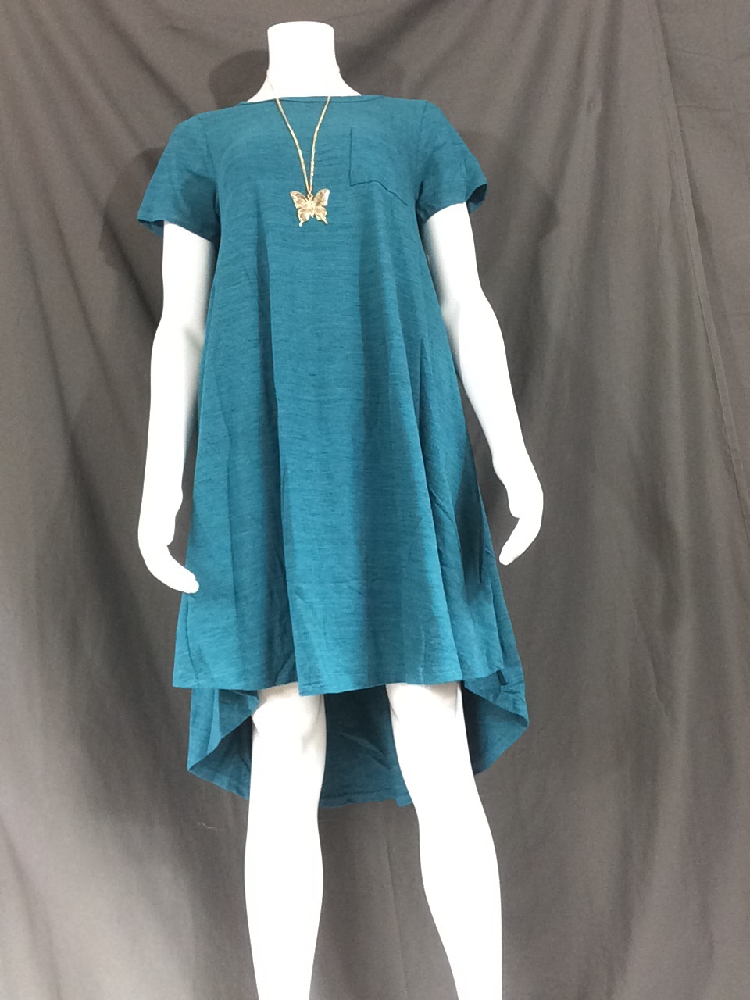

<!doctype html>
<meta name="viewport" content="user-scalable=no, initial-scale=1, maximum-scale=1, minimum-scale=1, width=device-width">
<title>Lularizer Wireframe</title>
<link rel="stylesheet" type="text/css" href="main.css">
<style>
html, footer {
    background: black;
}
#fakeCamera {max-width: 100%; }
#photoGuide {
    position: absolute;
    margin-left: -50px;
    margin-top: -100px;
    top: 50%; left: 50%;
    border: 1px dashed yellow;
    width: 100px; height: 100px;
}
</style>

<article>

<div id="photoGuide"></div>
</article>

<footer><p><button onclick="history.back()">Cancel</button><button onclick="location='edit'">Take photo</button></footer>

<script>

</script>
